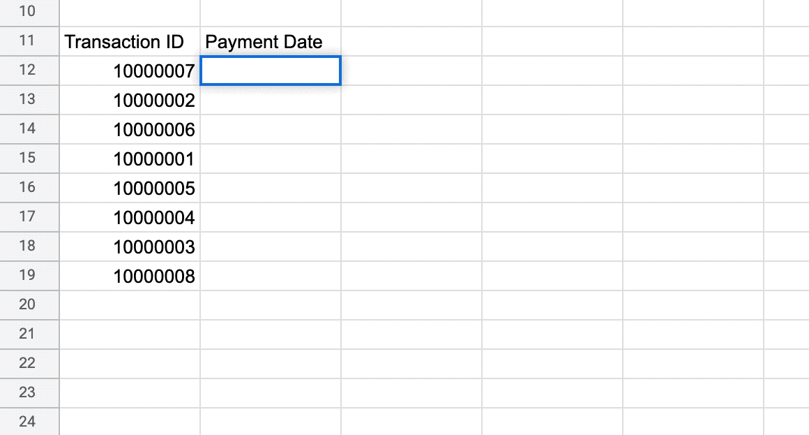
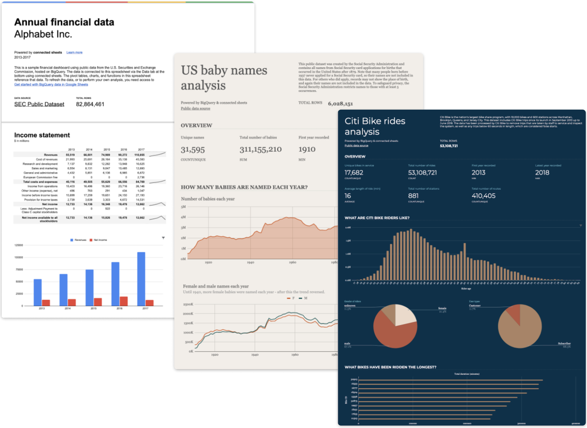
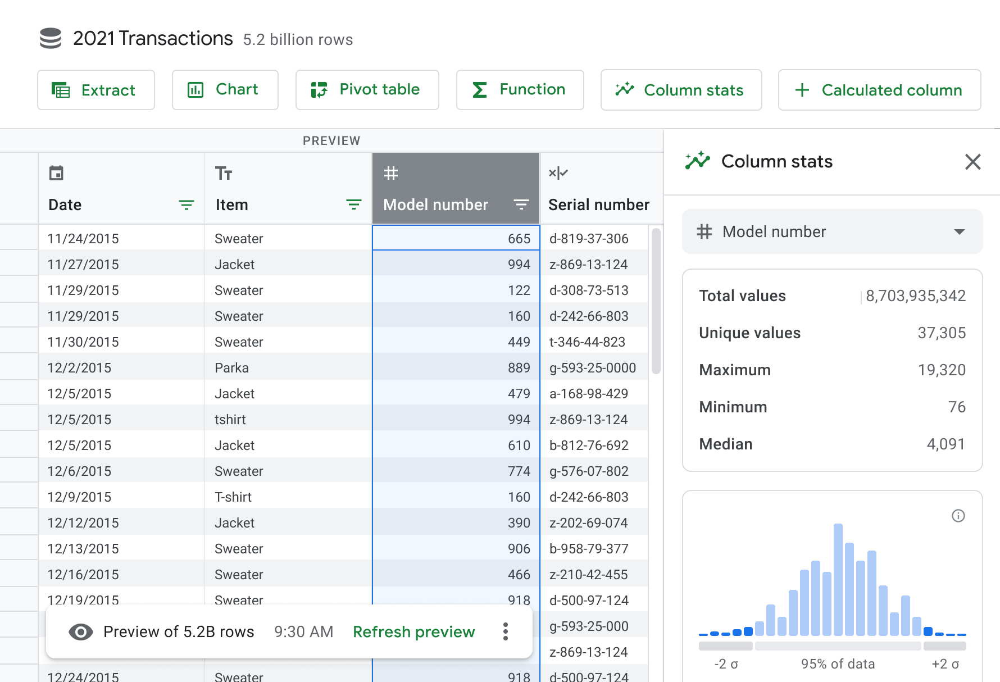

Elliott Malkin / Recent Work
This is a high-level selection of my recent work. Contact me for a deeper background on these projects. I'd be happy to walk you through it!
ML-Based Assistance
At Google, I've developed a host of features to assist users with some of the most painful moments in data analysis.
Smart Fill
Data entry can be tedious. SmartFill inputs data on users' behalf, triggered whenever Sheets detects certain input patterns.
Smart Cleanup
Cleaning dirty data is a major pain point for analysts. I designed a tool that detects and resolves duplicates, anomalies and other problems with a single click.
Smart Formulas
A set of tools that writes formulas on users' behalf, detects issues with existing formulas, and provides real-time assistance (shown here.)
Big Data
Spreadsheets are an excellent tool for handling data, when it's thousands of rows. But large enterprise customers handle billions of rows of data. So we built a new product to do it.
We call it Big Sheets. And it allows users to analyze and build dashboards over massive datasets.
The UI combines the familiarity of a spreadsheet with the power of a database, allowing users to sort, summarize, filter, pivot and analyze without the need for command-line tools like SQL.
The New York Times Mobile Transformation
As Product Design Director, I led a team to transform the NYT apps from static feed readers into experiences purpose-built for mobile.
When I took on the role, there was little to no variation across elements. Layouts were uniform. So I advocated for a major investment to break the downstream dependence from the desktop website, opening up a whole new generation of editorial styles.